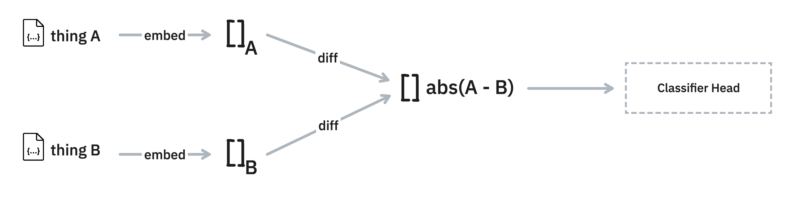

Techniques
This document contains some tricks, hints and demos of applications that you might want to consider in combination with this library.
Cache
Calculating embeddings can be expensive, even costly when you're using external providers. This is why this library offers an integration with diskcache. That way, you can infer the embeddings once and store them to disk for later.
Here's an example of how you might run that.
from embetter.text import SentenceEncoder
from embetter.utils import cached
encoder = cached("sentence-enc", SentenceEncoder('all-MiniLM-L6-v2'))
examples = [f"this is a pretty long text, which is more expensive {i}" for i in range(10_000)]
# This might be a bit slow ~17.2s on our machine
encoder.transform(examples)
# This should be quicker ~4.71s on our machine
encoder.transform(examples)
Note that you're also able to fetch the precalculated embeddings directly via:
from diskcache import Cache
# Make sure that you use the same name as in `cached`
cache = Cache("sentence-enc")
# Use a string as a key, if it's precalculated you'll get an array back.
cache["this is a pretty long text, which is more expensive 0"]
Be mindful of what does in to the encoder that you choose. It's preferable to give it text as opposed to numpy arrays. Also note that the first time that you'll run this it will take more time due to the overhead of writing into the cache.
Lite Embeddings
There are a lot of options out there for pretrained text embeddings but there are also a few noteworthy lightweight techniques that allow you to train your own from scratch. One such technique is to use the TfidfVectorizer
from scikit-learn followed by TruncatedSVD. The TfidfVectorizer even allows
you to specify analyzer=char with ngram_range = (3,4) to encode subwords, which even contributes to robustness against spelling errors if that's a concern.
The main thing that's cool about this approach is the representations can still be very reasonable for a lot of applications and train very quickly. Here's a quick demo:
import srsly
from umap import UMAP
from cluestar import plot_text
from embetter.text import learn_lite_doc_embeddings
# Train embeddings
texts = [ex['text'] for ex in srsly.read_jsonl("datasets/new-dataset.jsonl")]
enc = learn_lite_doc_embeddings(texts, dim=300)
# Create a 2D UMAP representation
X_orig = enc.transform(texts) # this takes ~56ms
X = UMAP().fit_transform(X_orig)
# Plot the UMAP representation with the text
plot_text(X, texts)
Note
You can also store the trained embeddings as part of the training-call.
enc = learn_lite_doc_embeddings(texts, dim=300, path="stored/on/disk.emb")
Here's what this chart looks like. Note that you can click and drag to explore!
Let's now consider what a similar chart might look like that uses Sentence Transformers.
from embetter.text import SentenceEncoder
sent_enc = SentenceEncoder()
X_orig = sent_enc.transform(texts) # this takes ~13.5s
X = UMAP().fit_transform(X_orig)
plot_text(X, texts)
The charts differ, but if you squint you can spot a cluster on the right hand side here that corresponds with the cluster at the bottom of the previous chart.
These "litetext" embeddings do overfit on the same words being used. But they are much faster and still give a reasonable representation for a lot of use-cases.
Difference Models
Embeddings can be very useful when you're dealing with a deduplication use-case. The thinking is that items that are close in embedded space might be great candidates to double-check.
To help investigate this, this library offers a DifferenceModel utility.

Here's how you might use it.
from embetter.model import DifferenceClassifier
from embetter.text import SentenceEncoder
mod = DifferenceClassifier(enc=SentenceEncoder())
# Suppose this is input data
texts1 = ["hello", "firehydrant", "greetings"]
texts2 = ["no", "yes", "greeting"]
# You will need to have some definition of "similar"
similar = [0, 0, 1]
# Train a model to detect similarity
mod.fit(X1=texts1, X2=texts2, y=similar)
mod.predict(X1=texts1, X2=texts2)
mod.predict_proba(X1=texts1, X2=texts2)
# The classifier head is a scikit-learn model, which you could save
# seperately if you like. The model can be accessed via:
mod.clf_head
The model really is just a light wrapper, but it might make it easier to bootstrap.
Available SentenceEncoders
There are many available models out there. Just have a look at MTEB.
Because the SentenceEncoder in this library is just a wrapper around sentence-transformers you should also
be able to load any more that the library can load.
# https://huggingface.co/thenlper/gte-small
model = SentenceEncoder('thenlper/gte-small')
model = SentenceEncoder('thenlper/gte-base')
model = SentenceEncoder('thenlper/gte-large')
There are many more models that you can consider. Just be aware that some models expect a prefix to be included in the text that you're encoding.
Speedup with Modal
Embedding text can be slow, especially when you're running on a CPU. If you wish to speed up your embedding calculations you may enjoy using modal. Modal allows you to add a GPU to a Python function simply by adding a decorator.
Not every encoder in embetter will get a speedup by using a GPU. But we've done some
benchmarks and noticed that
SentenceEncoder as well as ClipEncoder should both benefit. These components will
also automatically detect when the GPU is available automatically.
The code below gives an example.
import time
import h5py
import modal
stub = modal.Stub("example-get-started")
image = (modal.Image.debian_slim()
.pip_install("simsity", "embetter[text]", "h5py")
.run_commands("python -c 'from embetter.text import SentenceEncoder; SentenceEncoder()'"))
# This is the function that actually runs the embedding,
# notice that there's a GPU attached.
@stub.function(image=image, gpu="any")
def create(data):
from embetter.text import SentenceEncoder
return SentenceEncoder().transform(data)
@stub.local_entrypoint()
def main():
tic = time.time()
# You'd need to write your own function to read in the texts
data = read_text()
# This runs our decorated function on external hardware
X = create.call(data)
# Next we save it to disk for re-use
with h5py.File('embeddings.h5', 'w') as hf:
hf.create_dataset("embeddings", data=X)
toc = time.time()
print(f"took {toc - tic}s to embed shape {X.shape}")
On our own benchmarks, we seem to get a 4-5x speedup with just a minor edit to the code. This can be extremely helpful when you're trying to embed data in bulk.